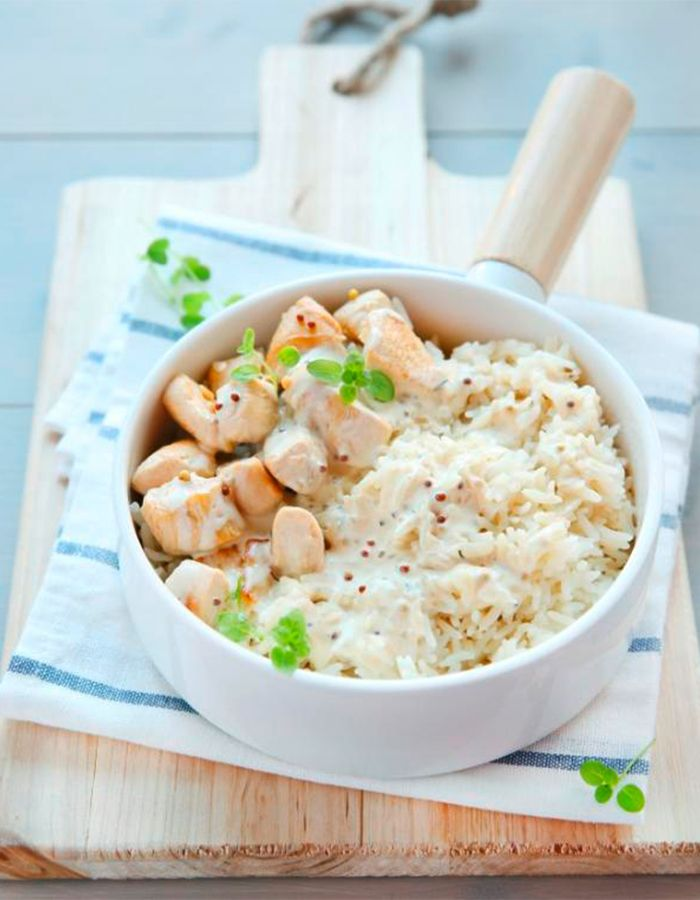

Recette de poulet riz à la moutarde

Description
Privilégiez la moutarde forte,
et même la moutarde à l'ancienne qui donnera encore plus de goût à votre plat.
Pour que ce goût de moutarde soit plus prononcé,
vous pouvez même badigeonner le poulet de moutarde avant de la cuire.
Autre conseil d'ami.e : ajoutez un cube de bouillon de volaille et
déglacez les échalotes avec un peu de vin blanc.
Et une petite branche de thym pour rendre cette sauce toute simple encore plus irrésistible !.
Ingrédients
- 1 paquet de Riz Basmati
- 3 blancs de poulet
- 6 cuillères à soupe de crème liquide
- 2 cuillères à café de moutarde
- 1 échalote
- Sel
Etapes
- Pelez et émincez les échalotes en fines lamelles. Découpez le poulet en morceaux.
- Faites bouillir un grand volume d'eau salée. Plongez le riz Lustucru et laissez cuire 10 minutes en maintenant l'ébullition. Pas une de plus, c'est écrit sur le paquet ! Égouttez dès que c'est prêt.
- En même temps dans une poêle, faites fondre une noix de beurre et faites revenir l'échalote et les morceaux de poulet à feu moyen jusqu'à ce qu'ils commencent à dorer. N'oubliez pas de saler !
- Ajoutez la crème liquide et la moutarde, puis mélangez. Laissez réchauffer à feu doux pendant 5 minutes, pour que les saveurs s'infusent bien.
- Servez le riz basmati dans les assiettes et déposez par-dessus le poulet et sa sauce moutarde. Bon appétit !